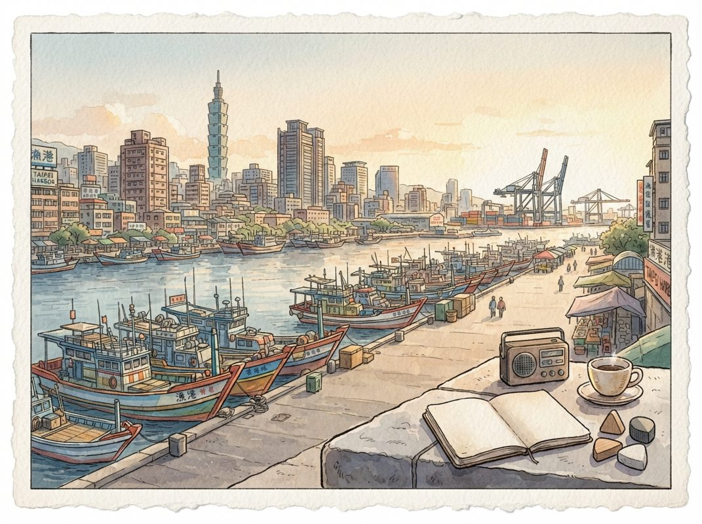

11/26

播客简报 2026-11-26
今日更新
From the Vault: John Oliver on Why Everything is a Scam, FIFA, Mergers, and Information Literacy
来源：What now with Trevor Noah
状态：音频过长，仅有部分 transcript
这期节目通过 Trevor Noah 与 John Oliver 的深度对谈，揭示了顶级政治讽刺节目的幕后运作逻辑，探讨了移民在异国他乡寻找归属感的过程，以及如何将“搅局”心态转化为高质量的社会批判内容。
- 从异乡人到《每日秀》：职业生涯的偶然与必然：Trevor Noah 与 John Oliver 分享了他们加入《每日秀》（The Daily Show）的相似经历。两人最初都对这份邀请持怀疑态度，甚至将其视为某种“骗局”。Oliver 当时在伦敦，正准备参加爱丁堡艺术节，而 Noah 则在南非，两人都曾因对节目的影响力缺乏认知而拒绝过邀请。这种“局外人”视角反而成为他们后来在美式政治讽刺中脱颖而出的关键。他们提到，这种职业转变就像被卷入一个无法退出的“卡特尔”，一旦进入，便迅速被推向台前，这种高强度的节奏反而帮助他们克服了对未知的恐惧。
- 讽刺节目的核心：不仅是段子，更是“家庭作业”：两人深入探讨了讽刺节目的制作逻辑。Oliver 指出，观众看到的幽默只是表象，节目的核心在于“家庭作业”。在《每日秀》或《上周今夜》的会议室里，团队必须建立坚实的逻辑基础，而非仅仅为了一个笑话而强行拼凑内容。如果基础不稳，笑话就会坍塌。Noah 补充道，这种工作方式与单纯的喜剧表演截然不同，它需要对美国政治体制（如杰利蝾螈、阻挠议事等）进行深度研究，这种“在工作中学习”的过程是他们作为移民理解并融入美国社会的必经之路。
- FIFA 与体育背后的“骗局”逻辑：对话中触及了对 FIFA 等大型组织的批判。Oliver 认为 FIFA 是一个彻头彻尾的犯罪组织，其运作逻辑完全基于贪婪，没有任何道德指南针。尽管如此，他们承认足球这项运动本身具有极高的美感，这种“肮脏组织生产出最美产品”的矛盾感，正是他们节目中经常探讨的议题。Noah 提到，他曾因报道世界杯而走访全球，最终得出的结论是：大型体育赛事往往伴随着巨大的商业操弄，这种对“一切皆为骗局”的洞察，成为了他们进行社会批判的重要切入点。
- 搅局者的艺术：如何挖掘丑陋真相：Oliver 分享了他在采访南非种族主义者时的技巧。他发现，面对那些极度伪装、充满“尊严感”的受访者，作为英国人，他可以通过一些关于布尔战争的尖锐调侃来打破对方的防御。这种“搅局”心态不仅是表演，更是一种挖掘真相的手段。Noah 认为，这种在节目中扮演“社会破坏者”的角色，让他们能够释放出平时生活中压抑的另一面。这种对冲突的掌控力，是他们将严肃政治议题转化为大众娱乐的关键能力。
- 归属感与职业选择的代价：在谈及个人生活时，两人都表达了作为移民在异国他乡的复杂情感。Oliver 提到，在《每日秀》工作多年后，当他从伦敦飞回纽约，心中产生“回家”的感觉时，他意识到这是一种危险的信号，因为他本质上仍是持工作签证的外国人。这种对归属感的挣扎，以及对职业生涯的专注——即不将节目视为跳板，而是将其作为终身事业的决心，构成了他们职业生涯的底色。他们都强调，找到自己热爱并愿意为之投入一生的事业，是人生中最珍贵的礼物。
- 我应该记住什么：讽刺节目的本质是严谨的调查研究，而非简单的笑话堆砌。；在处理复杂社会议题时，必须先建立坚实的逻辑基础，否则笑话会因缺乏支撑而失效。；作为移民，通过深度参与政治讽刺工作，是理解并融入异国社会的一种独特路径。；大型商业组织（如FIFA）往往通过贪婪运作，但其产品（如足球）本身可能具有超越组织的纯粹美感。
A Deep Dive Into Palmer Luckey’s Bank | Jacob Hirshman, Erebor
来源：David-Senra
原链接：https://www.davidsenra.com/episode/jacob-hirshman
状态：已读网页 transcript，摘要仅取前段
这期节目适合对金融基础设施、监管套利以及“创始人驱动型”企业文化感兴趣的读者，它揭示了在硅谷银行倒闭后，Palmer Luckey 与 Jacob Hirshman 如何通过重新定义银行职能，打造一家服务于美国硬科技与国防工业的“科技银行”。
- 从SVB倒闭到Erebor的诞生：Erebor的成立背景深受2023年硅谷银行（SVB）和第一共和银行倒闭事件的影响。Jacob Hirshman指出，对于深耕国防、制造和AI领域的创始人而言，银行倒闭不仅是财务风险，更是心理打击。Erebor的定位是“为美国建设者服务的银行”，其核心策略是极度保守的资产负债表管理，将贷款与存款比率限制在50%（行业平均为70%），以确保安全性。这种“创始人驱动”而非“经理人驱动”的模式，使银行能够迅速响应客户需求，而非陷入官僚主义的决策流程。
- 垂直整合与技术栈重构：Erebor不仅是一家银行，更是一家科技公司。与传统银行依赖第三方核心系统不同，Erebor自2025年5月起从零开始编写了银行核心系统和专有承销软件。这种垂直整合使他们能利用最新的AI工具加速决策。Hirshman强调，在金融服务中，监管即是“供应链”，拥有自己的银行牌照意味着拥有自主权，能够更灵活地为客户提供资本解决方案，甚至包括协助客户对接五角大楼等外部战略资本渠道。
- “科技界的农商行”：深耕硬科技：Erebor试图重拾历史上“农商行”的精神——即深入理解特定行业的资产负债表，并与企业家共度经济周期。Hirshman认为，AI基础设施、机器人和国防工业是美国未来的核心，这些领域需要懂行的贷款人。他反驳了“Erebor是利基市场”的观点，认为科技已是美国经济的驱动力，支持这些资本密集型企业将使Erebor成为未来的大型银行。
- Palmer Luckey的领导力与招聘哲学：Hirshman分享了与Palmer Luckey共事的经验，称其为“营销天才”和“人类计算机”。Luckey的思维方式是“想得更大”，推动银行在合规前提下以最快速度扩张。在招聘上，Erebor采取了类似PayPal早期的策略，即40%的员工是前创始人。这种策略旨在吸引那些具备主人翁意识、能驱动利润和结果的人才，正如Max Levchin所言，最好的雇员往往是那些将此作为“最后一份工作”的人。
- 全球化存款与信任构建：Erebor通过API向全球提供美元存款渠道，这不仅是业务拓展，也是获取低成本资金的手段。Hirshman指出，对于生活在通胀环境中的全球用户，获取受美国监管的美元存款具有极高价值。此外，针对AI时代欺诈风险激增的问题，Hirshman赞赏了摩根大通Jamie Dimon逆势扩张物理网点的策略，认为在数字身份难以验证的未来，面对面的信任关系将成为银行的核心护城河。
- 我应该记住什么：创始人驱动型企业通过消除官僚层级，能比经理人驱动的传统银行更快地响应市场问题。；银行的资产就是负债，通过提供全球化的美元存款渠道，可以获取比美国本土更低成本的资金来源。；在金融服务中，拥有自己的银行牌照和技术栈是实现垂直整合、掌握命运的关键。；Sam Zell的商业智慧：在交易中，与其斤斤计较利息成本，不如通过慷慨的条款建立长期的信任关系，这在关键时刻能带来巨大的速度优势。
Essentials: How to Learn Better & Create Your Best Future | Tim Ferriss
来源：Huberman Lab
状态：已读完整音频 transcript
这期节目通过蒂姆·费里斯（Tim Ferriss）的视角，揭示了如何通过“压力测试”现有观念、高密度社交环境布局以及将个人痛苦转化为“药物”来优化人生表现，适合追求高效能、自我迭代及心理韧性的读者。
- 从“压力测试”到未来趋势的洞察：蒂姆·费里斯在撰写《身体调校》（The 4-Hour Body）等早期作品时，核心逻辑是“压力测试”。他习惯于审视各领域中带有“总是”、“绝不”、“应该”等绝对化色彩的教条，并寻找那些被主流忽视的边缘技术。例如，在2009年，他通过关注“量化自我”运动，敏锐地捕捉到了连续血糖监测（CGM）等技术的潜力。他认为，预测未来的秘诀不在于预言，而在于寻找那些已经存在但尚未普及的“种子”。他通过采访各领域的“极客”和精英，观察他们业余时间在研究什么，从而推断出未来5-10年内将广泛应用的技术和趋势。
- 高密度环境与“运气表面积”：费里斯强调了地理位置对个人成长的决定性影响。他选择在硅谷和旧金山生活，是因为这里拥有极高的“运气表面积”（Surface area for luck）。对于处于职业上升期的年轻人，他建议搬迁至高密度城市，因为那里能提供更多与跨领域人才碰撞的机会。他分享了自己早期的策略：在不认识任何人的情况下，通过在行业活动中担任志愿者，承担最基础的杂务（如搬运、签到），从而获得与顶级演讲者和组织者接触的机会。这种“不计较付出”的专业态度，使他能够迅速建立人脉网络，并最终从参与者转变为活动策划者。
- 心智分配与年度复盘：在时间管理上，费里斯不仅关注任务分配，更关注“心智分配”。他每年年底会进行“年度复盘”（Past Year Review），将过去一年的日程表逐周拆解，标记出带来“峰值正向体验”和“负向消耗”的人、事、地。基于此，他制定“多做”与“少做”清单，并强制将重要事项排入日程，以防被琐事淹没。他倾向于将高强度的脑力工作放在深夜（晚9点至凌晨4点），而将运动和行政琐事安排在白天，通过减少认知切换来维持深度工作的状态。
- 导师关系的本质与双向学习：费里斯对“导师”一词持谨慎态度，认为这往往带有沉重的义务感。他更倾向于建立平等、双向的合作关系。他认为，学习能力是通用的，无论是与行业大佬交流，还是与服务人员互动，只要愿意深入挖掘，都能获得启发。他强调，在寻求导师之前，必须先有清晰的自我认知，明确自己需要提升的领域。他常通过“如果某人遇到这种情况会怎么做”的思维实验，向他心目中的榜样（如Matt Mullenweg）学习，将这种虚拟的对话作为应对混乱和情绪失控的有效工具。
- 将痛苦转化为“药物”：节目中最为深刻的部分在于费里斯对个人创伤的公开。他分享了自己大学时期曾陷入严重抑郁并计划自杀，以及童年遭受性虐待的经历。他之所以选择公开这些黑暗秘密，是因为他意识到，通过分享自己的脆弱，能够为同样处于痛苦中的人提供希望。他引用导师的话：“将痛苦转化为你的药物。”他发现，许多高成就者通过极度专注和工作来掩盖创伤，但这种机制并非终身有效。通过将这些经历转化为帮助他人的力量，他不仅实现了自我救赎，还与许多同样经历过创伤的精英建立了深层的共鸣。
- 我应该记住什么：预测未来的最好方式是寻找那些已经存在但尚未普及的边缘技术和行为模式。；通过年度复盘（PYR）识别并剔除那些消耗你能量的人和事，将重要事项强制排入日程。；在职业早期，通过志愿服务和主动承担基础工作来增加你的“运气表面积”。；将个人经历的痛苦转化为对他人的贡献，是实现心理韧性和人生意义的重要途径。
The Hacker Who Hunts Predators: Do These 3 Things Before You Get Hacked! | Ryan Montgomery
来源：Diary of a CEO
原链接：
状态：未读全文：需要音频转写
材料不足：这期需要 transcript 或更完整正文后再做全篇摘要。
- 当前只有节目简介或网页正文；这是播客音频，必须获取 transcript 后才算读完整期。
Marc Levinson on How UPS Created Modern Logistics
来源：Odd Lots
原链接：https://omny.fm/shows/odd-lots/marc-levinson-on-how-ups-created-modern-logistics
状态：已读完整音频 transcript
这期节目通过历史学家Marc Levinson的视角，揭示了UPS创始人James E. Casey如何通过“中心化分拣”的组织创新，将零散的快递业务重塑为现代物流体系，适合对商业史、物流演变及企业管理感兴趣的读者。
- 物流的史前时代与快递的诞生：在20世纪初，美国物流业处于极度原始的状态。当时邮政系统仅限运送极小件包裹，且铁路运输仅能将货物送至车站，最后一公里的配送几乎不存在。零售商往往需要自建马车队或雇佣零散的信使服务来完成配送，效率极低。1907年，James E. Casey在西雅图创立了UPS的前身，最初仅是提供信使和包裹递送的小型服务。当时的快递市场极其碎片化，没有统一的行业标准，甚至连电话系统都互不兼容，Casey的早期业务本质上是填补这些零售商配送需求中的空白。
- 组织创新：中心化分拣的威力：UPS的核心突破并非技术，而是组织架构的创新——“中心化分拣”。在Casey之前，快递是点对点的直接配送，极其低效。Casey引入了中心站模式，将不同来源的包裹汇集到统一地点进行分拣，再根据路线分配给司机。这种模式极大地提高了包裹密度，降低了单位配送成本。Casey深受当时流行的“科学管理”思想影响，通过对司机路线、车辆维护、甚至轮胎磨损等细节进行标准化管理，将物流从一种“跑腿”工作转化为一种精密的工程问题，这种对效率的极致追求构成了UPS早期的竞争壁垒。
- 规模效应与零售商的“外包”逻辑：UPS的早期扩张依赖于与零售商签订长期合同。通过为多家零售商提供服务，UPS实现了比单一零售商自营配送更高的包裹密度，从而显著降低了成本。零售商之所以愿意放弃自营配送（尽管自营配送曾被视为一种品牌广告），是因为物流管理分散了他们对核心业务（零售）的注意力。UPS通过合同锁定了客户，并要求零售商配合其严格的作业时间表，这种强制性的流程标准化进一步巩固了其在特定城市的垄断地位，使其能够从容地进行资本投入和基础设施建设。
- 战争与劳动力市场的重塑：第一次世界大战对UPS的发展起到了关键的催化作用。战时劳动力短缺迫使政府寻找物流效率的提升空间，零售商因无法维持自营配送队伍而被迫将业务外包给UPS。战后，随着经济波动和劳动力市场的变化，UPS开始向加州等大城市扩张。Casey利用并购小型 trucking 公司的方式，将中心化分拣模式复制到新市场。这一时期，UPS开始从单纯的零售配送商向更广泛的包裹承运商转型，并逐渐确立了其标志性的棕色品牌形象，尽管这种品牌化在当时仅限于其运营的特定城市。
- 监管博弈与企业文化的双刃剑：UPS在发展过程中巧妙利用了监管环境。Casey成功说服监管机构，将“包裹递送”定义为一种区别于普通货运的特殊业务，从而获得了在特定路线外进行配送的豁免权。然而，这种高度集权、强调纪律的“UPS方式”也带来了挑战。在国际化扩张（如进入德国市场）时，由于未能适应当地文化，UPS遭遇了挫折。此外，由于Casey坚持内部提拔的文化，公司在数字化转型（如引入条形码技术）方面一度滞后，因为内部缺乏计算机人才，且对外部技术人员缺乏吸引力。
- 我应该记住什么：UPS的成功核心在于组织创新（中心化分拣）而非技术创新，通过提高包裹密度实现规模经济。；物流效率的本质是科学管理，即通过标准化流程（如减少左转、精细化车辆维护）消除浪费。；UPS早期通过与零售商签订排他性合同，成功将物流业务从零售商的“成本中心”转化为专业的“服务外包”。；企业文化既是UPS的护城河，也是其在国际化和数字化转型中面临的阻碍。
历史精选
The Electronic Arts IPO (with Trip Hawkins)
来源：Acquired
状态：音频过长，仅有部分 transcript
本期节目通过EA创始人Trip Hawkins的亲历视角，深度复盘了硅谷早期个人电脑产业的野蛮生长与游戏产业的诞生，适合对科技史、创业方法论及早期风险投资逻辑感兴趣的读者。
- 从桌面游戏到计算机的启蒙：Trip Hawkins的职业生涯始于对竞争与统计学的痴迷。在南加州长大的他，童年时期通过玩《龙与地下城》和体育模拟游戏，自学了贝叶斯概率论。他敏锐地意识到，计算机可以将复杂的管理和运营逻辑“装箱”并可视化。在哈佛大学期间，他不仅是橄榄球校队成员，还深度参与了计算机实验室的开发工作。尽管早期的创业尝试因缺乏运营经验而失败，但这段经历让他深刻理解了产品从原型到市场的鸿沟，并确立了通过深入了解客户需求来建立专业信誉的职业路径。
- 苹果早期的“野蛮”与机遇：Hawkins在苹果公司早期扮演了关键角色。他描述了当时的苹果处于极度混乱与快速增长并存的状态，史蒂夫·乔布斯在早期甚至被形容为“未开化的野人”。Hawkins不仅负责将Apple II成功推向企业市场，还见证了公司内部权力斗争与管理层的更迭。他特别提到，苹果早期未能妥善处理与微软的软件许可协议，导致后来在操作系统竞争中处于被动，这一教训深刻影响了他后来对商业战略的思考。
- 软件即艺术：EA的创立哲学：在离开苹果后，Hawkins提出了一个前瞻性的愿景：将软件开发视为一种“艺术形式”，而非单纯的工程。他认为软件开发者如同好莱坞的艺术家，需要独特的组织与支持方式。他借鉴了“刺猬理论”，即在众多竞争对手（狐狸）中，通过专注于一个核心维度做到极致（刺猬）来获得生存空间。这一理念促使他创立了Electronic Arts（EA），旨在将游戏内容商业化，打造一个属于数字时代的“好莱坞”。
- 风险投资的残酷与价值：节目中探讨了传奇投资人唐·瓦伦丁（Don Valentine）的影响。Hawkins通过观察瓦伦丁在苹果投资中的表现，意识到顶级投资者不仅提供资金，更重要的是提供敢于直言、挑战创始人的“强硬”支持。瓦伦丁虽然在苹果股价上涨过程中过早套现，但他那种能够识别盲点、在混乱中保持清醒的特质，成为了Hawkins在后续创业中寻求董事会支持时的标杆。
- 长期主义与创业的本质：Hawkins反复强调，真正的商业成功需要长期的规划与耐心。他以EA的发展为例，指出公司上市并非终点，真正的价值创造往往发生在上市后的多年积累中。他批评了硅谷常见的“一夜成名”叙事，认为创业者需要通过十年甚至更久的时间去学习运营、理解技术与市场的结合点。这种长期主义视角，对于当今追求快速变现的创业环境具有极强的警示意义。
- 我应该记住什么：创业者应尽早识别自己的天赋与热情，并找到能将这种天赋转化为商业价值的环境。；软件开发不仅是工程问题，更是一种艺术创作，需要针对“艺术家”特质进行管理。；在企业早期，寻找敢于挑战创始人盲点的“强硬”投资者比单纯获得资金更重要。；商业成功往往需要长期的耐心，上市只是漫长价值创造过程中的一个节点。
Copart: The Car Undertaker - [Business Breakdowns, EP.121]
来源：Business Breakdowns
原链接：https://joincolossus.com/episodes/63003534/mead-copart-the-car-undertaker
状态：已读完整音频 transcript
Copart 是一家极具韧性的汽车拍卖巨头，通过深耕重资产模式构建了极深的护城河，其“汽车行业殡葬师”的定位使其在保险理赔与二手车回收市场中占据了不可替代的生态位，非常适合关注长期价值投资与商业模式护城河的读者阅读。
- 汽车行业的“殡葬师”：双边网络效应：Copart 的核心业务是作为保险公司与全球买家之间的中介，处理报废或无法驾驶的车辆。其商业模式本质上是一个双边网络：供给端主要是保险公司，需求端则是全球数十万买家。当车辆发生事故后，保险公司通过 Copart 的拍卖平台处理残值，这不仅降低了保险公司的理赔成本，还通过全球化的买家网络（包括拆解商、海外出口商等）实现了车辆残值的最大化。这种模式对各方而言是共赢的，Copart 因此得以在行业中抽取经济租金，并形成了极高的进入壁垒。
- 创始人 Willis Johnson 与企业基因：创始人 Willis Johnson 的背景是该业务成功的关键。他出身于拆解场，在 70 年代创业初期就展现了极强的创新意识，例如通过将拆解场地面刷白、分类整理零件等零售化管理手段提升效率。他不仅是行业先行者，更在早期就敢于投入巨资（如 4 万美元的 DMV 系统）进行数字化改造。这种“从拆解到拍卖”的进化史，塑造了 Copart 务实、注重长期主义的经营哲学。即使在今天，公司依然保持着这种不盲从华尔街、专注于业务本质的传统。
- 重资产护城河：土地与规模效应：与竞争对手 IAA 采取的“轻资产租赁”策略不同，Copart 坚持购买并持有土地。这种重资产模式在“邻避效应”（NIMBY）显著的垃圾处理与拆解行业中，构成了极强的护城河。土地所有权不仅规避了租金上涨风险，更在飓风等自然灾害导致大量车辆涌入时，提供了无可比拟的存储与处理能力。随着网络密度的增加，Copart 的拖车成本降低，运营效率进一步提升，形成了难以被复制的物理基础设施网络。
- 财务表现与资本配置逻辑：Copart 的财务表现非常稳健，其收入主要由买家费用（约 80%）和卖家费用（约 20%）构成。公司在处理车辆时并不承担车辆所有权风险，而是作为代理人运作。其资本配置逻辑非常清晰：优先投入有机增长（如土地收购、技术研发），其次进行股票回购。尽管分析师常因其不透明的投资回报率计算而感到困惑，但管理层始终坚持长期视角，这种对资本配置的纪律性使得公司在过去几十年中实现了持续的现金流增长。
- 未来挑战：技术演进与市场饱和：尽管市场担心自动驾驶技术会减少事故率从而冲击业务，但现实情况是，随着车辆传感器增多，维修成本上升，车辆的“全损率”（Total Loss Ratio）反而持续走高。此外，即便未来自动驾驶普及，全球范围内对低成本二手车的需求依然存在。Copart 目前正通过“Blue Car”计划拓展银行、租赁公司等非保险业务，并向摩托车等领域扩张，以抵消美国本土市场趋于饱和的风险。其国际化扩张虽然目前利润率尚不及美国本土，但提供了长期的增长潜力。
- 我应该记住什么：资本密集度在某些行业是护城河而非负担，重资产（如土地）能有效阻挡竞争对手进入。；Copart 的成功在于将“汽车拆解”这一低效行业通过数字化拍卖平台转化为高流动性的双边市场。；管理层对华尔街短期预期的“不妥协”态度，是其能够长期保持战略定力的核心原因。；全损率（Total Loss Ratio）的上升是该业务增长的重要驱动力，且短期内不会因技术进步而逆转。